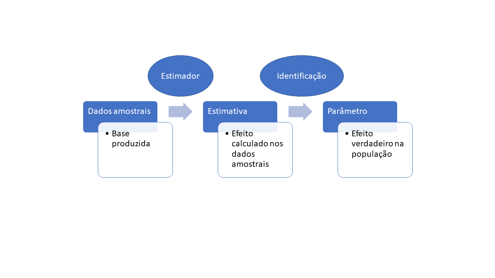

Ensinando Avaliação de impacto
Utilizando simulações como uma ferramenta auxiliar de aprendizagem
Lucas Fernandes de Magalhães
Introdução
\[ \]
Um dos principais desafios metodológicos enfrentados pela Economia e Ciência Política consiste em avaliar o impacto de políticas públicas.
A política de transferência condicional de renda aumentou os anos de escolaridade dos filhos das famílias beneficiadas pelo programa?
O aumento do salário mínimo eleva o desemprego?
Introdução
\[ \]
Para evitar vieses na análise, são utilizados desenhos experimentais ou quase-experimentais de difícil compreensão para alunos pouco versados em econometria e estatística
Neste trabalho proponho a utilização de bases simuladas para ensinar de forma didática a intuição por trás desses desenhos e apresento exemplos práticos.
Para tanto, foi desenvolvida uma função em R que pode ser acessada pelo link
O problema fundamental da inferência causal
\[ \]
O problema fundamental da inferência causal
\[ \]
| Escolaridade | Renda.Média | |
|---|---|---|
| Grupo 1 | Ensino superior | 4000 |
| Grupo 2 | Ensino Médio/Fundamental | 1000 |
O problema fundamental da inferência causal
\[ \]
Podemos afirmar com segurança que obter um diploma de nível superior “causa” um aumento médio na renda mensal de R$3.000,00?
\(Renda_{pais}[Alunos_{\text{Ensino superior}}] > Renda_{pais}[Alunos_{\text{Ensino Médio/Fundamental}}]\)
\(cor(Renda_{pais},Renda_{filhos}) \neq 0\)
Em outras palavras, se a renda dos pais é associada ao tratamento e ao outcome, ela é uma confusora.
O problema fundamental da inferência causal
O problema fundamental da inferência causal
\[ \]
Em outras palavras, na presença de confusoras como a renda dos pais, o grupo que cursou a graduação, mesmo sem ter cursado, naturalmente teria uma renda maior que a do outro grupo em função de diversas variáveis para além do diploma em ensino superior.
No fundo, isso nos remete a um problema de incomparabilidade entre grupos. Aquele que cursou a graduação não é diretamente comparável àquele que possui apenas ensino médio ou fundamental
Como contornar esse problema??
O problema fundamental da inferência causal

O problema fundamental da inferência causal
\[ \]
Idealmente, seria possível comparar a renda do grupo que cursou a graduação com a renda desse mesmo grupo, mas em uma dimensão paralela em que eles apenas obtiveram o ensino médio/fundamental.
Esses dois grupos seriam perfeitamente iguais em tudo (forma de criação, estrutura familiar, renda dos pais, capital social, etc.), sendo a única diferença entre eles o nível de escolaridade (\(Y \perp X\)).
O problema fundamental da inferência causal
\[ \]
De posse das rendas de ambos os grupos, a mera diferença de médias retornaria o verdadeiro efeito do nível escolaridade (X) sobre a renda (Y).
Porém, viagens interdimensionais ainda não existem. Eis o problema fundamental da inferência causal.
Todavia, embora contrafactuais perfeitos não existam, às vezes é possível encontrar nos dados uma boa aproximação deles.
Ou seja, grupos que, embora não sejam perfeitamente iguais, são semelhantes a ponto de permitirem a exclusão das explicações alternativas para o efeito de X sobre Y (identificação)
O problema fundamental da inferência causal
\[ \]

Desenho Experimental
\[ \]
Desenhos experimentais recorrem à aleatorização/randomização do tratamento entre os elementos da amostra, nome dado à variável de interesse que imagina-se exercer algum impacto sobre a variável dependente ou resposta.
Quando há a aleatorização do tratamento, os dois grupos criados (GT - grupo de tratamento e GC - grupo de controle) são, em média, comparáveis tanto nas variáveis observadas (aquelas que constam da tabela) quanto nas não observadas, sendo a única diferença entre eles a ausência/presência do tratamento
\(Y \perp X\)
Desenho Experimental
\[ \]
Desenho Experimental
\[ \]
| id | cursou_faculdade | renda_pais | sexo | cor | renda |
|---|---|---|---|---|---|
| 1 | 1 | 2490.765 | F | Branca | 8622.368 |
| 2 | 1 | 3829.584 | M | Branca | 12739.722 |
| 3 | 0 | 4459.290 | M | Outras | 13978.181 |
| 4 | 1 | 4211.436 | F | Branca | 13784.168 |
| 5 | 1 | 3217.400 | M | Outras | 10751.873 |
| 6 | 1 | 3564.278 | F | Branca | 11842.716 |
| 7 | 1 | 3184.713 | F | Outras | 10555.032 |
| 8 | 0 | 3238.991 | F | Branca | 10367.184 |
| 9 | 1 | 3088.039 | M | Branca | 10513.628 |
| 10 | 1 | 3276.725 | F | Branca | 10979.954 |
Desenho Experimental
\[ \]
Desenho Experimental: estimação
## [1] 470##
## Welch Two Sample t-test
##
## data: bd$renda[bd$cursou_faculdade == 1] and bd$renda[bd$cursou_faculdade == 0]
## t = 15.775, df = 9996.1, p-value < 2.2e-16
## alternative hypothesis: true difference in means is not equal to 0
## 95 percent confidence interval:
## 411.9292 528.8268
## sample estimates:
## mean of x mean of y
## 10125.920 9655.542Desenho Experimental: estimação
| Dependent variable: | ||
| Renda | ||
| Mod. sem covar | Mod. com covar | |
| Ensino superior | 470.378*** | 499.987*** |
| (29.818) | (0.020) | |
| Sexo (Ref.: Masculino | 100.020*** | |
| (0.021) | ||
| Cor (Ref.:Branca) | 149.999*** | |
| (0.023) | ||
| Renda dos pais | 3.000*** | |
| (0.00002) | ||
| Constant | 9,655.542*** | 500.004*** |
| (21.082) | (0.065) | |
| Observations | 10,000 | 10,000 |
| R2 | 0.024 | 1.000 |
| Adjusted R2 | 0.024 | 1.000 |
| Residual Std. Error | 1,490.891 (df = 9998) | 1.005 (df = 9995) |
| F Statistic | 248.853*** (df = 1; 9998) | 5,638,304,298.000*** (df = 4; 9995) |
| Note: | p<0.1; p<0.05; p<0.01 | |
Desenho Experimental: estimação
\[ \]
Entretanto, em muitos casos, como no próprio exemplo explorado, é inviável a randomização da política pública.
Nessas situações, não há garantia de que os dois grupos, aquele que se beneficiou de uma política e o grupo de controle, sejam comparáveis
A saída é recorrer aos desenhos quase-experimentais que “fabricam” grupos comparáveis, de tal modo que a distribuição do tratamento fica “como se fosse randomizada”.
Pareamento
Pareamento: desbalanceamento
Pareamento: estimação
## [1] 2057##
## Welch Two Sample t-test
##
## data: bd$renda[bd$cursou_faculdade == 1] and bd$renda[bd$cursou_faculdade == 0]
## t = 79.295, df = 9995.4, p-value < 2.2e-16
## alternative hypothesis: true difference in means is not equal to 0
## 95 percent confidence interval:
## 2006.324 2108.032
## sample estimates:
## mean of x mean of y
## 10918.244 8861.066Pareamento: estimação
| Dependent variable: | ||
| Renda | ||
| Mod. sem covar | Mod. com covar | |
| Ensino superior | 2,057.178*** | 499.995*** |
| (25.943) | (0.026) | |
| Sexo (Ref.: Masculino | 100.002*** | |
| (0.022) | ||
| Cor (Ref.:Branca) | 149.984*** | |
| (0.026) | ||
| Renda dos pais | 3.000*** | |
| (0.00002) | ||
| Constant | 8,861.066*** | 500.020*** |
| (18.343) | (0.067) | |
| Observations | 10,000 | 10,000 |
| R2 | 0.386 | 1.000 |
| Adjusted R2 | 0.386 | 1.000 |
| Residual Std. Error | 1,297.170 (df = 9998) | 1.005 (df = 9995) |
| F Statistic | 6,287.670*** (df = 1; 9998) | 6,783,338,212.000*** (df = 4; 9995) |
| Note: | p<0.1; p<0.05; p<0.01 | |